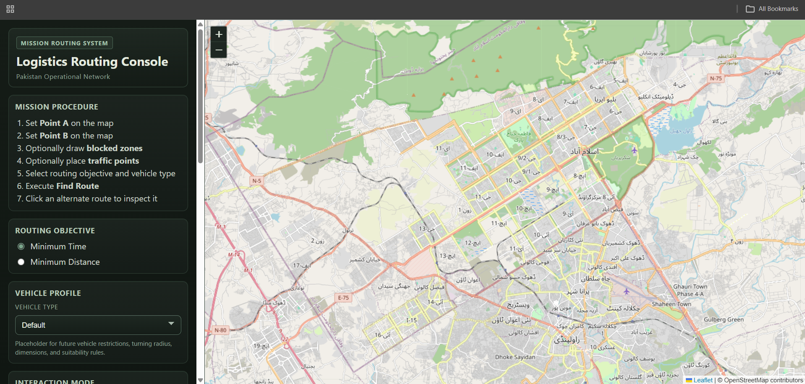

Code & tools
Logistics Routing
The shortest route is not always the one a journey can use. A closure may cut through it, or a delay may make another route worth considering. I built this prototype so a user can choose two locations, draw areas to avoid and compare alternatives by estimated time or distance.
I used selected major roads from a Pakistan OpenStreetMap extract and connected the network to a browser map. My work covered road preparation in PostGIS, routing with pgRouting, a Flask service and the Leaflet interface.
- Road data
- OpenStreetMap
- Route objectives
- Time or distance
- Status
- Local prototype
- Tools
- PostgreSQL, PostGIS, pgRouting, Flask, Leaflet, SQL, Docker
The routing interface


The project's browser interface, showing route controls beside the map. This screenshot shows the starting view before a route is selected. Map data © OpenStreetMap contributors.
Inspect details: The routing interfaceMaking the road network usable
I split the roads into connected segments while using bridge, tunnel and layer attributes to distinguish crossings at different levels. I assigned distance costs and travel time estimates from assumed road speeds, with separate costs for forward and reverse travel on one way roads.
A drawn barrier can cover only part of a segment. I locate and combine the blocked intervals, then create temporary connections for the remaining portions. Selected endpoints connect to nearby roads, and traffic points add simulated delays.
Comparing the alternatives
The result is a set of route geometries, distances, estimated times and steps. The user can select an alternative on the map and see how an avoidance area changes the journey. This gives the route lines a practical meaning beyond their appearance on the screen.
I packaged the components with Docker Compose for local use. This remains a prototype: traffic is simulated, speeds are assumed, smaller road classes are omitted and the vehicle selector does not yet apply vehicle restrictions. Those parts need further work before the results could support operational delivery planning.